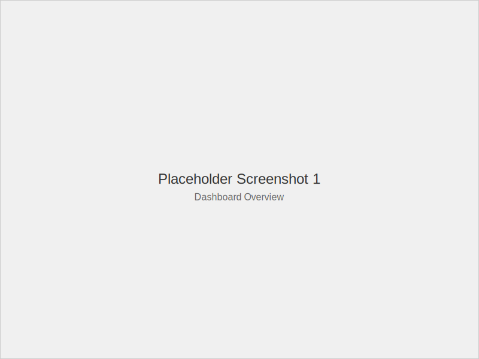
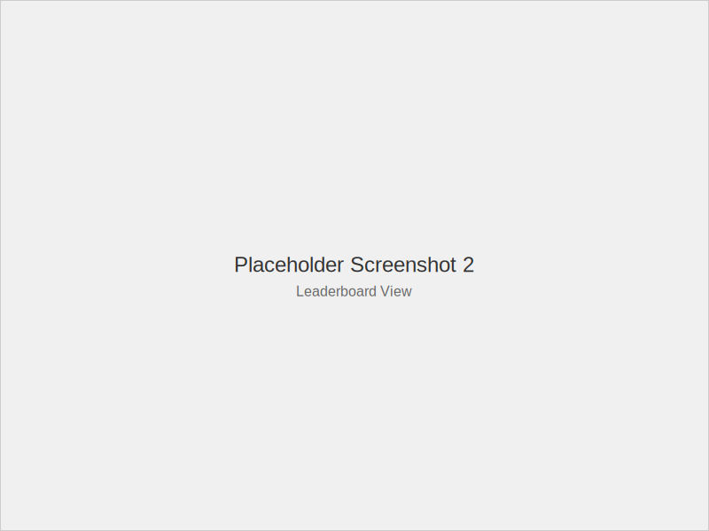

Overview
FBA-Bench is an open-source benchmark suite designed to evaluate AI agents' performance in realistic e-commerce scenarios. It features tiered challenges from basic operations to advanced multi-agent interactions, with comprehensive metrics for trust, efficiency, and financial outcomes. Developed for reproducibility and community collaboration, FBA-Bench sets the standard for trustworthy AI automation in online retail.
Logos and Wordmark
Downloadable logos and wordmark in SVG format for versatile use across media.
{kind=link}
{kind=link}
{kind=link}
Product Screenshots
Representative screenshots of the FBA-Bench dashboard and leaderboard interfaces.
 {kind=link}
{kind=link}
Contact / Press Inquiries
For media inquiries, interviews, or additional assets, please contact:
Brand Guidelines
Basic rules for using FBA-Bench branding responsibly.
- Maintain clear space around logos equal to the logo height.
- Do not alter colors, proportions, or add effects to logos or wordmarks.
- Use light variants on dark backgrounds and dark on light for optimal contrast.
- Always attribute as "FBA-Bench" and link to the official site when used in media.
- Prefer vector (SVG) formats for scalability; minimum size 100px width.
These guidelines are minimal and subject to updates. For custom usage, contact press@fba-bench.ai.